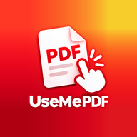

UseMePDF – Gizlilik Politikası
1. Belgeleriniz cihazınızda kalır
UseMePDF ile yaptığınız tüm işlemler (PDF oluşturma, birleştirme, bölme, sıkıştırma, döndürme, Word ↔ PDF dönüştürme, belge tarama, metin tanıma/OCR, filigran ve sayfa numarası ekleme, imza ekleme, PDF'e parola koyma ve parolayı kaldırma, toplu işlem) cihazınızda yapılır. Dosyalarınız, fotoğraflarınız ve belge içerikleriniz bizim ya da başka birinin sunucusuna yüklenmez; içerikleri tarafımızca görülmez veya analiz edilmez. Uygulamanın kendi sunucusu yoktur ve kullanıcı hesabı oluşturulmaz.
Uygulamaya kaydettiğiniz dosyalar uygulamanın cihazınızdaki kendi depolama alanında tutulur. Bu alan Android yedeklemesine ya da cihazdan cihaza aktarıma dahil edilmez ve uygulamayı kaldırdığınızda silinir. "Kaydedilenleri telefona da kaydet" ayarı açıkken (varsayılan) ya da "Telefona kaydet"i seçtiğinizde dosyanın bir kopyası telefonunuzun İndirilenler › usemepdf klasörüne yazılır. Bu kopya telefonunuzun ortak depolama alanındadır: Dosyalar uygulamasında ve dosyalara erişim izni verdiğiniz diğer uygulamalarda görünebilir, uygulamayı kaldırdığınızda silinmez. Bu ayarı uygulamadaki Ayarlar → Kaydetme bölümünden kapatabilirsiniz. Bir dosyayı paylaştığınızda, seçtiğiniz uygulamaya yalnızca siz göndermiş olursunuz.
Kamera yalnızca belge tarama ve fotoğraf çekme için, sizin başlatmanızla sistem kamerası/tarayıcı ekranı üzerinden kullanılır. Uygulama depolama izni istemez; dosyalara yalnızca sizin seçtiğiniz kadar erişir.
Kayıtlı imza özelliğini kullanırsanız çizdiğiniz imza yalnızca cihazınızda, uygulamanın kendi ayarlarında saklanır; hiçbir yere gönderilmez ve yedeklemeye dahil edilmez. İmzayı uygulamada değiştirebilir; Android ayarlarından uygulamanın verilerini temizleyerek ya da uygulamayı kaldırarak silebilirsiniz. PDF'e koyduğunuz ya da parolalı bir PDF'i açmak için yazdığınız parolalar yalnızca o işlem sırasında kullanılır; saklanmaz ve hiçbir yere gönderilmez.
2. Üçüncü taraf hizmetler
Uygulama, Google'ın aşağıdaki hizmetlerini kullanır. Bu hizmetler kendi gizlilik politikalarına tabidir.
Google AdMob (reklamlar) ve Google Kullanıcı Mesajlaşma Platformu (izin formu) — yalnızca ücretsiz sürümde. AdMob reklam sunmak, ölçmek ve kötüye kullanımı önlemek için şu verileri toplayabilir ve Google ile paylaşabilir: IP adresi (genel konum tahmini için), uygulama içi etkileşimler (uygulama açılışı, reklam görüntüleme/dokunma), tanılama bilgileri ve cihaz tanımlayıcıları (Android reklam kimliği, uygulama grubu kimliği). Avrupa Ekonomik Alanı, Birleşik Krallık ve İsviçre'de kişiselleştirilmiş reklamlar için izniniz istenir; seçiminizi uygulamadaki Ayarlar → Reklam gizlilik seçenekleri bölümünden değiştirebilirsiniz. Reklam kimliğinizi Android ayarlarından sıfırlayabilir veya silebilirsiniz. Pro sürümde reklam gösterilmez ve reklam hizmeti başlatılmaz. Ayrıntı: https://policies.google.com/technologies/partner-sites
Google ML Kit (metin tanıma ve belge tarayıcı) — metin tanıma cihazda çalışır; görüntüleriniz ve tanınan metin gönderilmez. ML Kit, hizmetin çalışmasını ve kalitesini izlemek için Google'a tanılama ve kullanım bilgileri (cihaz ve uygulama bilgisi, kuruluma özel bir tanımlayıcı, performans ölçümleri, işlenen verinin boyutu, hata kodları) gönderebilir; bu bilgiler üçüncü taraflarla paylaşılmaz.
Google Play Faturalandırma — Pro aboneliği satın alma, yenileme ve iptal işlemleri Google Play tarafından yürütülür. Ödeme bilgileriniz bize iletilmez. Uygulama, abonelik durumunu doğrulamak için Google Play'i cihazınızdan sorgular; satın alma bilgisi bizim bir sunucumuza gönderilmez.
Google Play uygulama içi değerlendirme — uygulama ara sıra Google Play'in puanlama penceresini gösterebilir. Verdiğiniz puan ve yorum doğrudan Google Play'e gider; bize ya da uygulamaya iletilmez.
Bu hizmetlerin gönderdiği veriler aktarım sırasında şifrelenir (HTTPS/TLS).
3. Çocuklar
Uygulama 13 yaşından küçük çocuklara yönelik değildir.
4. Verilerinizin silinmesi
Uygulamanın kendi sunucusu olmadığından sizin hakkınızda bizde saklanan bir veri yoktur. Uygulamadaki dosyaları uygulama içinden ya da uygulamayı kaldırarak silebilirsiniz; İndirilenler › usemepdf klasörüne kaydedilen kopyaları telefonunuzun Dosyalar uygulamasından silebilirsiniz. Google'ın topladığı veriler için Google'ın gizlilik araçlarını kullanabilirsiniz: https://myaccount.google.com
5. Değişiklikler ve iletişim
Bu politika değişirse güncel hâli bu sayfada yayımlanır. Sorularınız için: usemepdf.destek@gmail.com